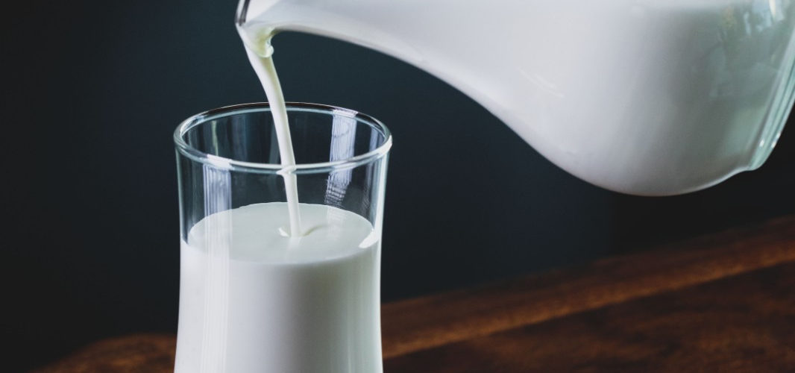

20 interesting facts about milk

1. Молоко — самодостатній продукт.
Молоко здавна вважали їжею, а не напоєм. У ньому міститься близько 200 активних компонентів, а стакан молока є повноцінним разовим прийомом їжі. Примітно, що у селах і сьогодні можна почути застаріле «поїсти молока».
2. Ми п’ємо молоко протягом більш 10 000 років.
Ще наші предки змогли оцінити користь молока. Найдавніші останки одомашненої корови, відомі сьогодні археологам, датуються VIII тисячоліттям до н. е. А це значить, що ми п’ємо коров’яче молоко вже більше 10 тисяч років.
3. Ультра пастеризація — найбільше досягнення у сфері харчових технологій минулого століття.
Технологію ультра пастеризації молока і асептичну упаковку Tetra Pak винайшли у 1960-і. Це дозволило збільшити термін зберігання молока до півроку. У 1989 році ультра пастеризацію назвали найбільшим досягненням у сфері харчових технологій ХХ століття.
4. Молоко допомагає боротися з безсонням.
Молоко має седативну дію на організм людини і розслабляє нервову систему. Стакан теплого молока із додаванням ложечки меду і щіпки мускатного горіха — найпростіший і дуже дієвий рецепт від безсоння.
5. Дієтологи рекомендують вживати щодня 3 порції молочних продуктів.
Норма молочних продуктів для дорослої людини складає 350-400 грамів на день. Денний молочний раціон може складатися, наприклад, з 150-200 мл молока, кефіру, ряжанки чи йогурту, 100-120 грамів сиру і 30-40 грамів твердого сиру.
6. Молоко краще споживати окремо.
Щоб молоко добре засвоювався, його рекомендують вживати окремо від інших продуктів харчування. Але є один виняток: молоко можна поєднувати з крупами. І краще його не кип’ятити, а додавати теплим у вже готову кашу.
Радимо використовувати ультра пастеризоване молоко: завдяки щадній, проте ретельній термообробці у ньому немає небезпечних мікроорганізмів, однак максимально зберігаються поживні речовини, вітаміни, мінерали, цінний білок казеїн.
Таке молоко корисне і цілком безпечне — його не потрібно кип’ятити, можна просто наливати у склянку або кашу прямо з пакета.
7. У світі переробляють понад 650 млн тон молока на рік.
Усі молочні підприємства світу переробляють понад 650 млн тон молока на рік або 1,8 млн тон у день. А ось одна корова дає від 11 до 23 літрів молока у день, і за своє життя «виробляє» для нас у середньому 200 000 склянок молока.
8. Сонячні промені руйнують корисні речовини, які містяться у молоці.
Під впливом світла у молоці руйнуються жири, білки, вітаміни і амінокислоти. Зберігатися такий продукт повинен у спеціальній асептичній упаковці — багатошарових картонних пакетах, які надійно захищають вміст від негативного впливу зовнішніх чинників, включаючи ультрафіолетове випромінювання.
9. Склад молока складний і різноманітний.
У молоці — 87% води, решту 13% складають вітаміни, мікро- і макроелементи, білки, амінокислоти і багато інших корисних речовин. Всього у ньому містяться близько 80 мінеральних елементів, причому в ідеальній для засвоєння нашим організмом формі.
10. Молоко скисає під час грози.
Вчені пояснюють це дивовижне явище впливом довгохвильових електромагнітних імпульсів або сферіксів. Втім, механізм цього впливу їм досі не вдалося розгадати.
11. У білий колір молоко забарвлює білок.
Своїм кольором молоко зобов’язане білку казеїну. Він утворює кулясті частки — міцели, які і забарвлюють молоко у білий колір.
12. Переварювати молоко допомагає лактаза.
Раніше молоко пили тільки діти. Організм дитини виробляв особливий фермент лактазу, який розщеплює лактозу і дозволяє організму засвоювати молоко.
У дорослих цей фермент був відсутній, однак поступово, в результаті генетичної мутації, він почав вироблятися і у дорослих жителів Північної Європи — як необхідністю компенсувати нестачу вітаміну D, котрий синтезується в організмі людини під впливом сонячних променів. Погода у Північній Європі дула дощовою і похмурою, тож вибір багатих на вітаміни їстівних рослин був невеликий.
Еволюція знайшла вихід із цього становища, подарувавши людині здатність засвоювати молоко і отримувати з нього потрібні елементи і вітаміни, у тому числі вітамін D.
13. Молоко виводить токсини з організму.
Молоко містить білки лактоглобуліни, які зв’язують і виводять з організму шкідливі речовини. Саме тому усім працівникам шкідливих виробництв безкоштовно видають «молоко за шкідливість».
14. Молоко — найдоступніше і найбільш ефективне джерело кальцію.
Кальцій необхідний організму для зміцнення кісток і зубів. І саме у молоці він знаходиться у найбільш засвоюваній формі. Добова норма споживання кальцію повинна становити від 1000 до 1200 мг. У склянці молока міститься близько 300 мг кальцію.
15. За аюрведою молоко — продукт найвищої благості.
За аюрведою молоко є одним з найцінніших продуктів харчування, оскільки воно має цілющий вплив на організм людини. Послідовники цього древнього вчення радять споживати молоко з прянощами і спеціями.
16. Молоко підтримує м’язову масу.
При активному фізичному навантаженні протеїн у м’язах руйнується. Компенсувати його недолік допомагає молоко — джерело легкозасвоюваного білка. Саме тому спортсмени після тренування п’ють молочні коктейлі.
17. Молоко — джерело унікального білка казеїну.
78-87% від усіх молочних білків становить казеїн, якого немає ні в яких інших продуктах. Це джерело таких цінних мікроелементів як кальцій і фосфор. У коров’ячому молоці казеїну у 300 разів більше, ніж у жіночому грудному молоці.
18. Молоко має молодильні властивості.
Ще красуня Клеопатра приймала молочні ванни і славилася своєю оксамитовою шкірою. Сьогодні вчені розкрили секрет її краси: амінокислоти, що містяться у молоці, зволожують шкіру, надають їй пружності та еластичності.
19. 1 червня у всьому світі відзначають Всесвітній день молока.
1 червня обрано для святкування Всесвітнього дня молока не випадково. Більшість країн, які підтримали ініціативу ООН щорічно відзначати день молока з метою популяризації молочних продуктів, вже мали свій національний день молока. І найчастіше він випадав саме на цю дату.
20. Регулярне споживання молока розвиває інтелект.
У найдавніших священних писаннях Ведах зазначається, що коров’яче молоко — це унікальний продукт, який не має аналогів у всьому Всесвіті. Він сприяє швидкому розвитку тонких тканин головного мозку — інтелекту.